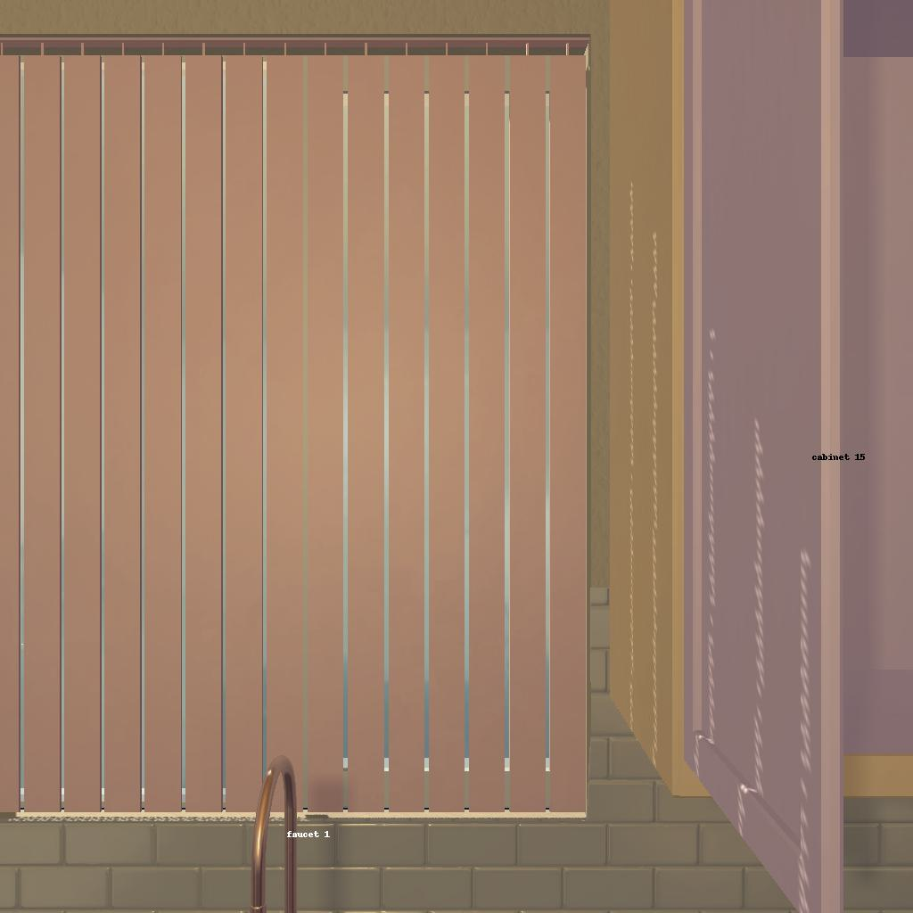
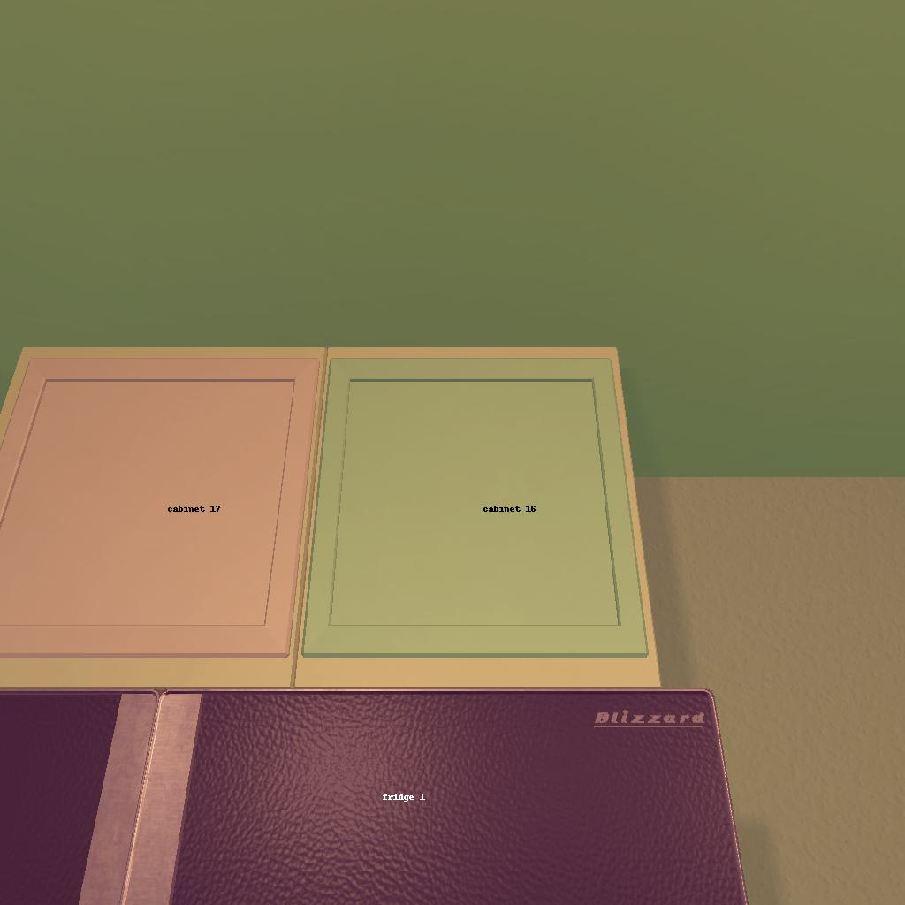

---------------------------------------------------------task: 10---------------------------------------------------------
--------------------------------------------------------------------------------------------------------------------------------------------------------------------
--------------------------------------------------------------------------------------------------------------------------------------------------------------------
Step:--------------------------------------------------------------------------18-------------------------------------------------------------------------------
----------------------------------------
VLM Prompt:
Image1:
Image2:
**Instruction**
1. Analyze the provided image to identify all visible household objects, focusing on those relevant to the task description "clean some plate and put it in countertop."
2. Use the analysis of the image and the task hint "The agent must find an object of the desired type, pick it up, go to a sink or a basin, clean the object with a sink or basin, and then find the correct location to place it and put it down there. The agent does not need to use soap bottle or faucet to clean the object, and the agent just needs to do action that is "clean the object with the sink or sink basin"." to answer the question: what is the most reasonable action in the choices for the task description "clean some plate and put it in countertop"?
4. Decide and write the answer using the template: The answer is: (i): , where i is the real number. If there is no desired object in the image, search every place based on **Initial Observation** to find the object. And if no one is exactly correct, choose a similar answer.
**Initial Observation**
You are in the middle of a room. Looking quickly around you, you can see cabinet (1-20), toaster (1), microwave (1), garbagecan (1), countertop (1-2), drawer (1-4), stoveburner (1-4), sinkbasin (1), sink (1), fridge (1), diningtable (1), coffeemachine (1)
**Answer Choices**
(1): go to cabinet 1
(2): go to cabinet 2
(3): go to cabinet 3
(4): go to toaster 1
(5): go to cabinet 4
(6): go to cabinet 5
(7): go to microwave 1
(8): go to garbagecan 1
(9): go to countertop 1
(10): go to drawer 1
(11): go to cabinet 6
(12): go to cabinet 7
(13): go to drawer 2
(14): go to stoveburner 1
(15): go to stoveburner 2
(16): go to countertop 2
(17): go to cabinet 8
(18): go to cabinet 9
(19): go to cabinet 10
(20): go to drawer 3
(21): go to drawer 4
(22): go to stoveburner 3
(23): go to stoveburner 4
(24): go to cabinet 11
(25): go to cabinet 12
(26): go to cabinet 13
(27): go to cabinet 14
(28): go to sinkbasin 1
(29): go to sink 1
(30): go to fridge 1
(31): go to cabinet 17
(32): go to cabinet 18
(33): go to cabinet 19
(34): go to diningtable 1
(35): go to coffeemachine 1
(36): go to cabinet 20
(37): open cabinet 16
(38): close cabinet 16
(39): examine cabinet 16
**Answer**
Let's think step by step by following the instructions.
----------------------------------------
----------------------------------------
Original Response:
The task is to clean some plates and put them on the countertop. To do this, the agent must find a plate, clean it at a sink or sink basin, and then place it on the countertop.
From the initial observation, we can infer that plates are likely to be found in cabinets or drawers near the dining area or the kitchen.
In Image 1, we see a faucet labeled "faucet 1," which suggests that there is a sink or sink basin in that area, but we do not see any plates or cabinets/drawers that would typically contain plates.
In Image 2, we see cabinets labeled "cabinet 17" and "cabinet 18," and a fridge labeled "fridge 1." Cabinets are a likely location for plates.
Based on this analysis, the most reasonable action to find a plate would be to go to a cabinet near the sink or dining area. Since we do not have visibility of all the cabinets and the images provided do not show any plates, we should choose an action based on the initial observation that directs us to a cabinet.
The answer is: (37): open cabinet 16. Since cabinet 16 is the only cabinet mentioned in the answer choices and it is reasonable to assume that plates could be stored there. After finding and cleaning a plate, the agent would then go to a countertop to complete the task.
----------------------------------------
----------------------------------------
>>> Refine Original VLM Response and Get Pure Action: open cabinet 16
----------------------------------------
-----------------------------------------------------------------
Running time: 11.279828548431396 seconds
Total Money: 4.73781
-----------------------------------------------------------------
-----------------------------------------------------------------
Text Observation:You open the cabinet 16. The cabinet 16 is open. In it, you see nothing.
-----------------------------------------------------------------
UNSUCCEED